Electric Vehicle Thermal Management
This example models the thermal management system of a battery electric vehicle. The system consists of two coolant loops, a refrigeration loop, and a cabin HVAC loop. The thermal load are the batteries, powertrain, and cabin.
The two coolant loops can be joined together in serial mode or kept separate in parallel mode using the 4-way valve. In cold weather, the coolant loops are in serial mode so that heat from the motor warms the batteries. If necessary, a heater can provide additional heat. In warm weather, the coolant loops remain in serial mode and both the batteries and the powertrain are cooled by the radiator. In hot weather, the coolant loop switches to parallel mode and separates. One loop cools the powertrain using the radiator. The other cools the batteries using the chiller in the refrigeration loop.
The refrigeration loop consists of a compressor, a condenser, a liquid receiver, two expansion valves, a chiller, and an evaporator. The chiller is used to cool the coolant in hot weather when the radiator alone is insufficient. The evaporator is used to cool the vehicle cabin when air conditioning is turned on. The compressor is controlled such that the condenser can dissipate the heat absorbed by either or both the chiller and the evaporator.
The HVAC loop consists of a blower, an evaporator, a PTC heater, and the vehicle cabin. The PTC heater provides heating in cold weather; the evaporator provides air conditioning in hot weather. The blower is controlled to maintain the specified cabin temperature setpoint.
This model has three scenarios set up. The drive cycle scenario simulates driving conditions in 30 degC weather with air conditioning on. The vehicle speed is based on the NEDC followed by 30 min of high speed to push the battery heat load. The cool down scenario simulates a stationary vehicle in 40 degC weather with air conditioning on. Finally, the cold weather scenario simulates driving conditions in -10 degC weather, which requires the battery heater and PTC heater to warm up the batteries and cabin, respectively.
Contents
- Model
- Scenario Subsystem
- Controls Subsystem
- Parallel-Serial Mode Valve Subsystem
- Motor Pump Subsystem
- Charger Subsystem
- Motor Subsystem
- Inverter Subsystem
- Radiator Subsystem
- Radiator Bypass Valve Subsystem
- Battery Pump Subsystem
- Chiller Subsystem
- Chiller Bypass Valve Subsystem
- Heater Subsystem
- DCDC Subsystem
- Battery Subsystem
- Compressor Subsystem
- Condenser Subsystem
- Chiller Expansion Valve Subsystem
- Evaporator Expansion Valve Subsystem
- Evaporator Subsystem
- Blower Subsystem
- Recirculation Flap Subsystem
- PTC Subsystem
- Cabin Subsystem
- Cabin Heat Transfer Subsystem
- Simulation Results from Scopes
Model

Scenario Subsystem
This subsystem sets up the environment conditions and inputs to the system for the selected scenario. The battery current demand and powertrain heat load are a function of the vehicle speed based on tabulated data.
Controls Subsystem
This subsystem consists of all of the controllers for the pumps, compressor, fan, blower, and valves in the thermal management system.
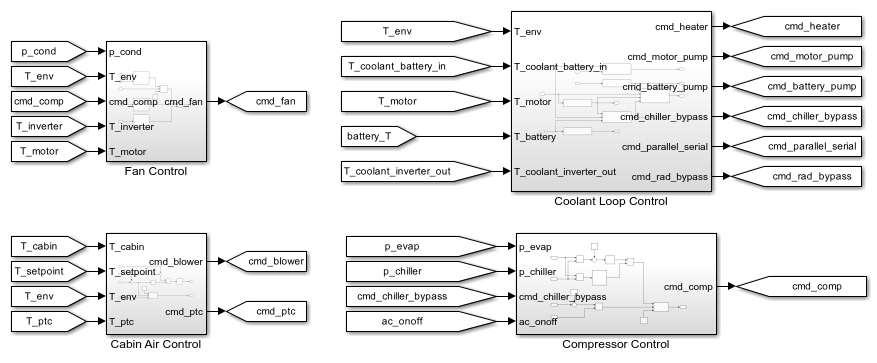Parallel-Serial Mode Valve Subsystem
The 4-way valve in this subsystem controls whether the coolant loop operates in parallel or serial mode. When ports A and D are connected and ports C and B are connected, it is in parallel mode. The two coolant loops are separated with their own coolant tanks and pumps.
When ports A and B are connected and ports C and D are connected, it is in serial mode. The two coolant loops are merged and the two pumps are synchronized to provide the same flow rate.

Motor Pump Subsystem
This pump drives the coolant loop that cools the charger, motor, and inverter.
Charger Subsystem
This subsystem models a coolant jacket around the charger, which is represented by a heat flow rate source and a thermal mass.
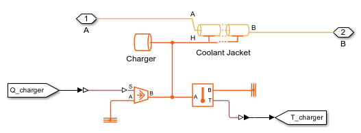Motor Subsystem
This subsystem models a coolant jacket around the motor, which is represented by a heat flow rate source and a thermal mass.
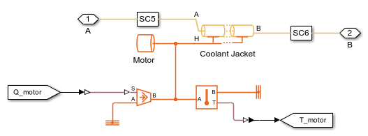Inverter Subsystem
This subsystem models a coolant jacket around the inverter, which is represented by a heat flow rate source and a thermal mass.
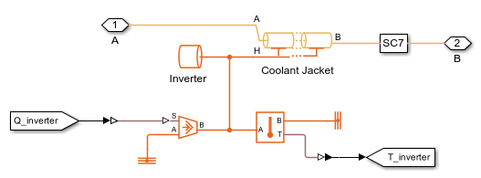Radiator Subsystem
The radiator is a rectangular tube-and-fin type heat exchanger that dissipates coolant heat to the air. The air flow is driven by the vehicle speed and the fan located behind the condenser.
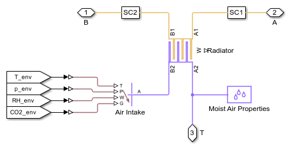Radiator Bypass Valve Subsystem
In cold weather, the radiator is bypassed so that heat from the powertrain can be used to warm up the batteries. This is controlled by the the 3-way valve that either sends coolant to the radiator or bypasses the radiator.

Battery Pump Subsystem
This pump drives the coolant loop that cools the batteries and the DC-DC converter.
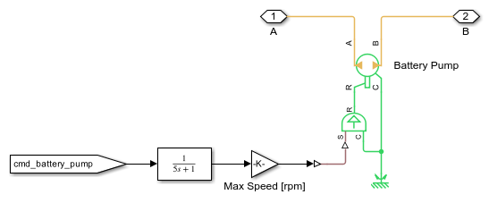Chiller Subsystem
The chiller is assumed to be a shell-and-tube type heat exchanger that lets the refrigerant absorb heat from the coolant.
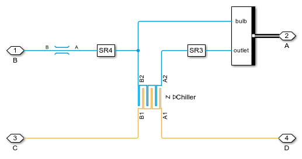Chiller Bypass Valve Subsystem
The chiller operates in an on-off manner depending on the battery temperature. This is controlled by the the 3-way valve that either sends coolant to the chiller or bypasses the chiller.
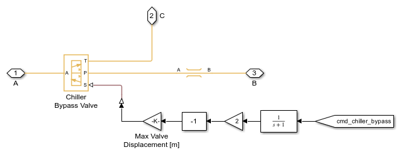Heater Subsystem
The battery heater is modeled as a heat flow rate source and a thermal mass. It is turned on in cold weather to bring the battery temperature above 5 degC.
DCDC Subsystem
This subsystem models a coolant jacket around the DC-DC converter, which is represented by a heat flow rate source and a thermal mass.
Battery Subsystem
The Battery subsystem is made up of four series connected Battery Modules. All modules are of the same type and size, with each module consisting of 2-parallel Pouch type cells per series of 20 such strings. All modules have same type of Pouch cells with the total number of cells in the Battery being equal to 160 (4 modules of 20X2 cells). The 160 cells in the Battery differ in their capacity rating. The cell-to-cell variation in cell capacity is defined using parameter Cell Ahr rating variation. The workspace variables battery_moduleCellAhr_ini01, battery_moduleCellAhr_ini02, battery_moduleCellAhr_ini03 and battery_moduleCellAhr_ini04 define cell capacity values for the four modules, defined initialization file EV_Thermal_Management_param.m. Each battery module is cooled using its own coolant plate, specified as a pipe element. The coolant inlet temperature to all modules is the same.
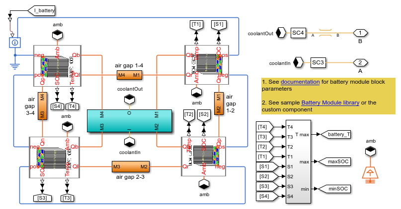Compressor Subsystem
The compressor drives the flow in the refrigerant loop. It is controlled to maintain a pressure of 0.3 MPa in the chiller and the evaporator, which corresponds to a saturation temperature of around 1 degC.
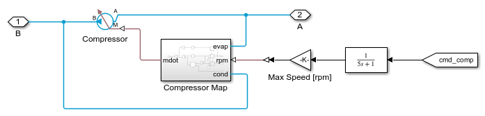Condenser Subsystem
The condenser is a rectangular tube-and-fin type heat exchanger that dissipates refrigerant heat to the air. The air flow is driven by the vehicle speed and the fan. The liquid receiver provides storage for the refrigerant and permits only subcooled liquid to flow into the expansion valves.
Chiller Expansion Valve Subsystem
This expansion valve meters refrigerant flow to the chiller to maintain a nominal superheat.
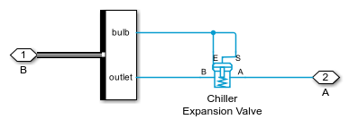Evaporator Expansion Valve Subsystem
This expansion valve meters refrigerant flow to the evaporator to maintain a nominal superheat.
Evaporator Subsystem
The evaporator is a rectangular tube-and-fin type heat exchanger that lets the refrigerant absorb heat from the air. It also dehumidifies the air when the air is humid.
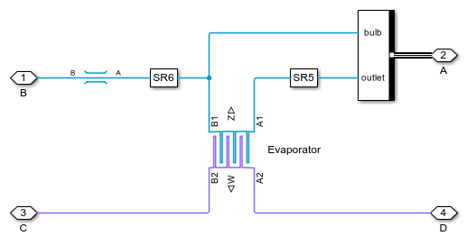Blower Subsystem
The blower drives the air flow in the HVAC loop. It is controlled to maintain the cabin temperature setpoint. The source of air can come from the environment or from recirculated cabin air.
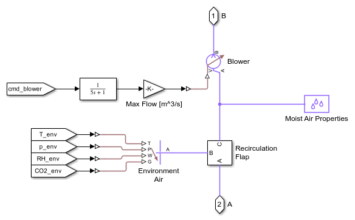Recirculation Flap Subsystem
The recirculation flap is modeled as two restrictions operating in the opposite manner to let either environment air or cabin air to the blower.
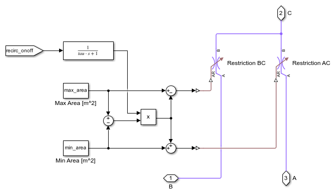PTC Subsystem
The PTC heater is modeled as a heat flow rate source and a thermal mass. It is turned on in cold weather to provide heating to the vehicle cabin.
Cabin Subsystem
The vehicle cabin is modeled as a large volume of moist air. Each occupant in the vehicle is a source of heat, moisture, and CO2.
Cabin Heat Transfer Subsystem
This subsystem models the thermal resistances between the cabin interior and the external environment.
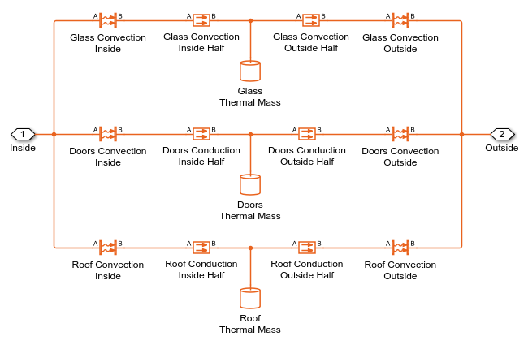Simulation Results from Scopes
The following scope shows the vehicle speed, heat dissipation, cabin temperature, component temperatures, and control commands for the drive cycle scenario. At the beginning, the coolant loop is in serial mode. After about 1100 s, it switches to parallel mode and the chiller is used to keep the batteries below 35 degC.
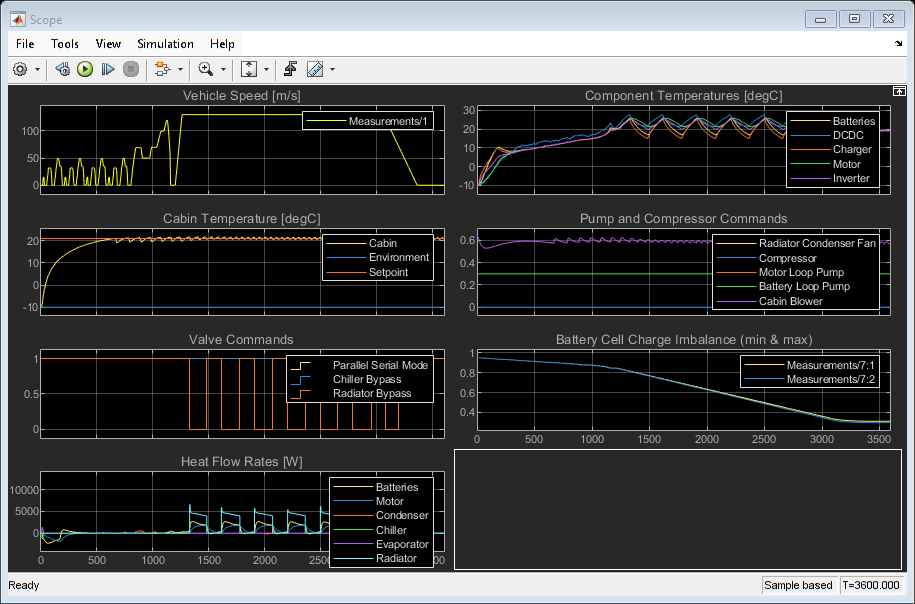